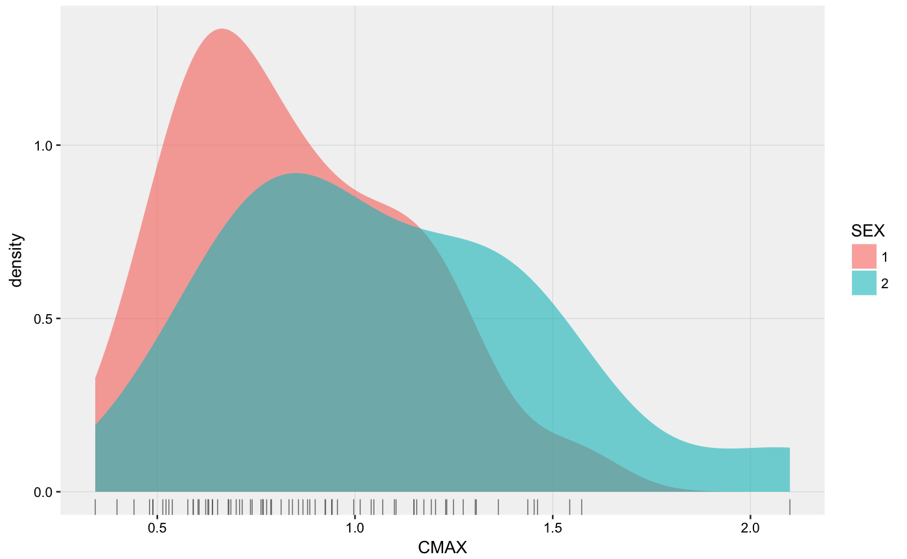

group_by() takes an existing table and converts it into a
grouped table where operations are performed "by group". ungroup() removes grouping.
summarize() reduces multiple values down to a single value.
# S3 method for xpose_data group_by(.data, ..., .problem, .source, .where) # S3 method for xpose_data ungroup(x, ..., .problem, .source, .where) # S3 method for xpose_data summarize(.data, ..., .problem, .source, .where) # S3 method for xpose_data summarise(.data, ..., .problem, .source, .where)
| .data | An xpose database object. |
|---|---|
| ... | Name-value pairs of expressions. Use These arguments are automatically quoted and evaluated in the context of the data frame. They support unquoting and splicing. See the dplyr vignette("programming") for an introduction to these concepts. |
| .problem | The problem from which the data will be modified |
| .source | The source of the data in the xpdb. Can either be 'data' or an output file extension e.g. 'phi'. |
| .where | A vector of element names to be edited in special (e.g.
|
| x | Same as .data (used for consistency with dplyr functions). |
# Create a distribution plot of Cmax xpdb_ex_pk %>% group_by(ID, SEX, .problem = 1) %>% summarize(CMAX = max(DV), .problem = 1) %>% ungroup(.problem = 1) %>% xplot_distrib(aes(x = CMAX, density_fill = SEX), type = 'dr')#>